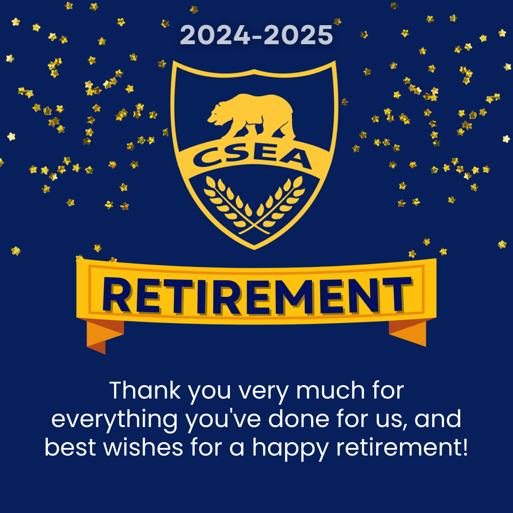
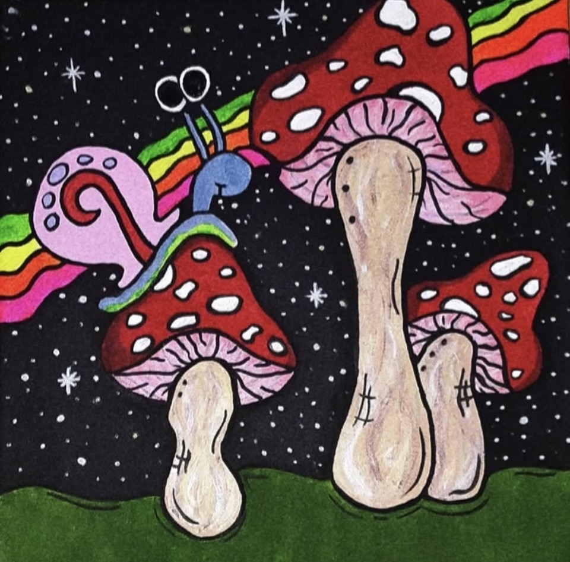
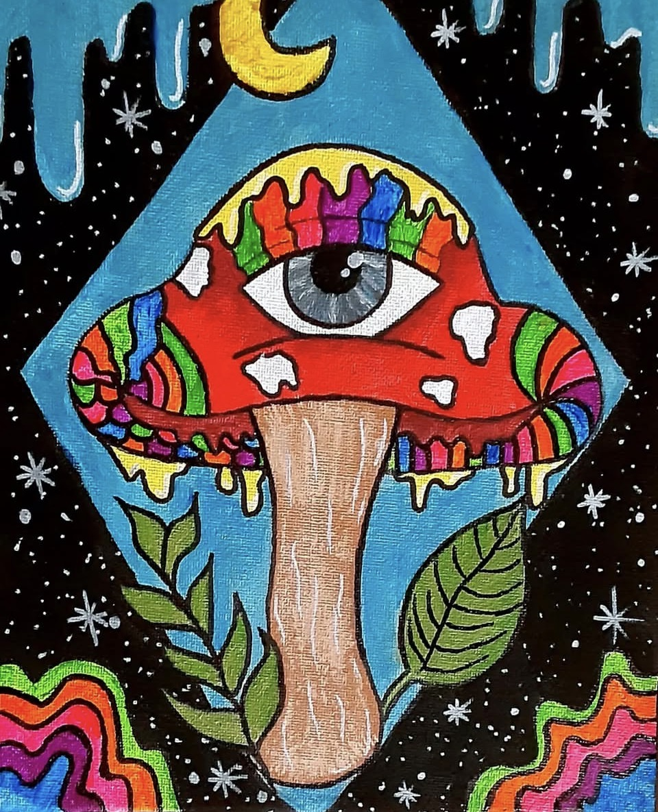

Classified Employees Appreciation Week Flyer:
For 2025, I created a flyer for the Union of California State Employees Association that highlights this year’s theme: *trust, inclusive, and united*. My goal was to design something simple, welcoming, and meaningful so classified employees felt truly appreciated. I used clear wording and a friendly layout to make the message stand out. This project reflects my ability to create designs that match an organization’s theme while still connecting with people on a personal level.

Retirement Flyer:
For this project, I designed a retirement appreciation flyer for the Union of California State Employees Association. The goal was to create a warm, grateful message that honors the dedication of retiring members. I used the Union’s signature blue and gold color scheme to keep the design consistent with their branding, while organizing the layout to feel clean, balanced, and celebratory.

Psychedelic Gary Painting:
I painted this as a birthday gift for a friend’s daughter, who loves SpongeBob and psychedelic-style art. The painting shows Gary in a fun, trippy style with lots of vibrant colors, making it playful and eye-catching. I wanted it to feel whimsical and unique, just like her personality.

Psychedelic Mushroom Painting:
This painting was the very first piece I created for a friend’s request. It features vibrant, psychedelic mushrooms in bold, swirling colors that feel playful and dreamlike. I wanted it to be fun and whimsical, capturing the magic and creativity of the moment while experimenting with a new style. It was exciting to bring someone else’s idea to life and see how my artistic vision could make it unique.